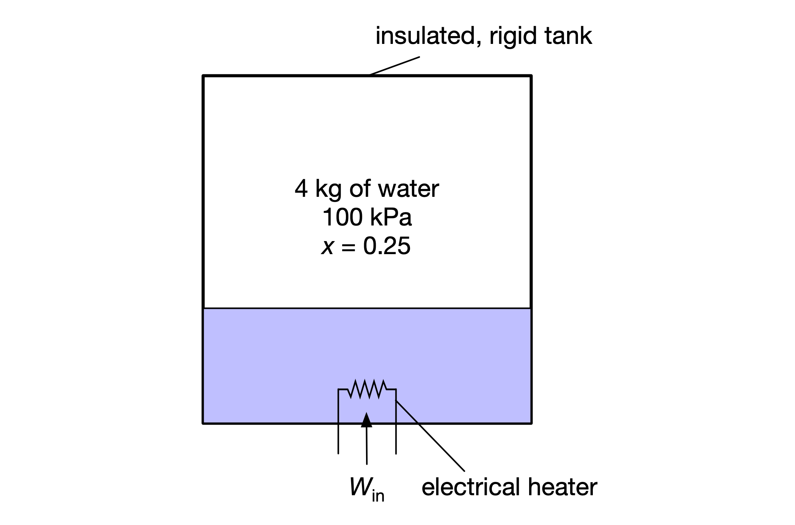

Water heating¶
An insulated, rigid tank contains 4 kg of water at 100 kPa, where initially 0.25 of the mass is liquid. An electric heater turns on and operates until all of the liquid has vaporized. (Neglect the heat capacity of the tank and heater.)

Problem:
Determine the final temperature and pressure of the water.
Determine the electrical work required by this process.
Determine the total change in entropy associated with this process.
Plot the state points for the water on a temperature-specific entropy diagram.
First, load the necessary modules and specify the known/initial conditions.
import matplotlib.pyplot as plt
%matplotlib inline
import numpy as np
import cantera as ct
from IPython.display import set_matplotlib_formats
set_matplotlib_formats('pdf', 'png')
plt.rcParams['savefig.dpi'] = 150
plt.rcParams['figure.dpi']= 150
from pint import UnitRegistry
ureg = UnitRegistry()
Q_ = ureg.Quantity
mass = Q_(4, 'kg')
pressure_initial = Q_(100, 'kPa')
quality_initial = 0.25
quality_final = 1.0
# specify the initial state using pressure and quality
state_initial = ct.Water()
state_initial.PX = pressure_initial.to('Pa').magnitude, quality_initial
state_initial()
water:
temperature 372.809 K
pressure 100000 Pa
density 2.35669 kg/m^3
mean mol. weight 18.016 amu
vapor fraction 0.25
1 kg 1 kmol
----------- ------------
enthalpy -1.49887e+07 -2.7e+08 J
internal energy -1.50312e+07 -2.708e+08 J
entropy 6337.06 1.142e+05 J/K
Gibbs function -1.73512e+07 -3.126e+08 J
heat capacity c_p inf inf J/K
heat capacity c_v 20936.9 3.772e+05 J/K
Find final temperature and pressure¶
Due to conservation of mass, since the mass and volume of the system are fixed, the specific volume and density must be constant:
Therefore the final state is fixed by the density and quality, where \(x_2 = 1\):
state_final = ct.Water()
state_final.DX = state_initial.density, quality_final
---------------------------------------------------------------------------
AttributeError Traceback (most recent call last)
<ipython-input-3-845410e31b81> in <module>
1 state_final = ct.Water()
----> 2 state_final.DX = state_initial.density, quality_final
AttributeError: 'cantera._cantera.PureFluid' object has no attribute 'DX'
Hmm, what happened here? It looks like Cantera unfortunately does not support specifying the thermodynamic state using density and quality. (With quality as one property, it only supports temperature or pressure as the other property.)
Fortunately, CoolProp does support specifying the state the way we need to solve this problem, so let’s use that for the final state:
from CoolProp.CoolProp import PropsSI
temp_final = PropsSI(
'T', 'D', state_initial.density, 'Q', quality_final, 'water'
) * ureg.kelvin
pres_final = PropsSI(
'P', 'D', state_initial.density, 'Q', quality_final, 'water'
) * ureg.pascal
print(f'Final temperature: {temp_final: .2f}')
print(f'Final pressure: {pres_final: .2f}')
# We can then set the final state using the Cantera object,
# now that we know temperature
state_final = ct.Water()
state_final.TX = temp_final.magnitude, quality_final
Final temperature: 420.08 kelvin
Final pressure: 438257.38 pascal
Find electrical work required¶
To find the work required, we can do an energy balance on the (closed) system: \begin{equation} W_{\text{in}} = m (u_2 - u_1) \end{equation}
work = mass * (Q_(state_final.u, 'J/kg') - Q_(state_initial.u, 'J/kg'))
print(f'Electrical work required: {work.to(ureg.megajoule): .2f}')
Electrical work required: 6.47 megajoule
Find entropy change¶
The total entropy change is the change in entropy of the system plus that of the surroundings:
since the entropy change of the surroundings is zero.
entropy_change = mass * (Q_(state_final.s, 'J/kg') - Q_(state_initial.s, 'J/kg'))
print(f'Entropy change: {entropy_change: .2f}')
Entropy change: 16195.98 joule
This process is irreversible, associated with a positive increase in total entropy.
Plot the state points for water¶
We can construct the saturated liquid and saturated vapor lines in a temperature–specific entropy diagram (T–s diagram), and then plot the initial and final states locations along with the process line (of constant density):
f = ct.Water()
# Array of temperatures from fluid minimum temperature to critical temperature
temps = np.arange(np.ceil(f.min_temp) + 0.15, f.critical_temperature, 1.0)
def get_sat_entropy_fluid(T):
'''Gets entropy for temperature along saturated liquid line'''
f = ct.Water()
f.TX = T, 0.0
return f.s
def get_sat_entropy_gas(T):
'''Gets entropy for temperature along saturated vapor line'''
f = ct.Water()
f.TX = T, 1.0
return f.s
# calculate entropy values associated with temperatures along
# saturation lines
entropies_f = np.array([get_sat_entropy_fluid(T) for T in temps])
entropies_g = np.array([get_sat_entropy_gas(T) for T in temps])
# critical point
f.TP = f.critical_temperature, f.critical_pressure
fig, ax = plt.subplots(figsize=(5, 3))
# Plot the saturated liquid line, critical point,
# and saturated vapor line
ax.plot(entropies_f, temps)
ax.plot(entropies_g, temps)
ax.plot(f.s, f.T, 'o')
plt.xlabel('Specific entropy (J/kg⋅K)')
plt.ylabel('Temperature (K)')
# Plot the initial and final states, and label them
ax.plot(state_initial.s, state_initial.T, 's')
ax.annotate('(1)', xy=(state_initial.s, state_initial.T),
xytext=(0, -20), textcoords='offset points',
ha='right', va='bottom'
)
ax.plot(state_final.s, state_final.T, 's')
ax.annotate('(2)', xy=(state_final.s, state_final.T),
xytext=(20, 0), textcoords='offset points',
ha='right', va='bottom'
)
# show process line of constant density
temps = np.arange(state_initial.T, state_final.T, 1.0)
def get_entrophy(T, density):
f = ct.Water()
f.TD = T, density
return f.s
entropies = np.array([get_entrophy(T, state_initial.density) for T in temps])
ax.plot(entropies, temps, '--')
plt.grid(True)
fig.tight_layout()
plt.show()